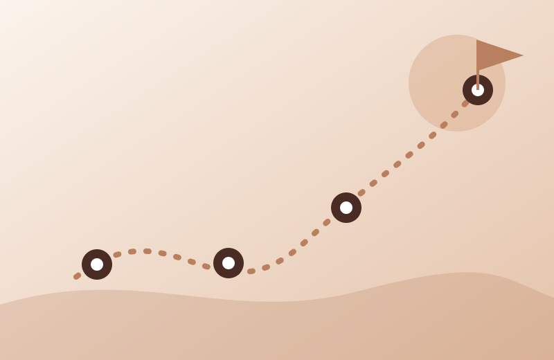
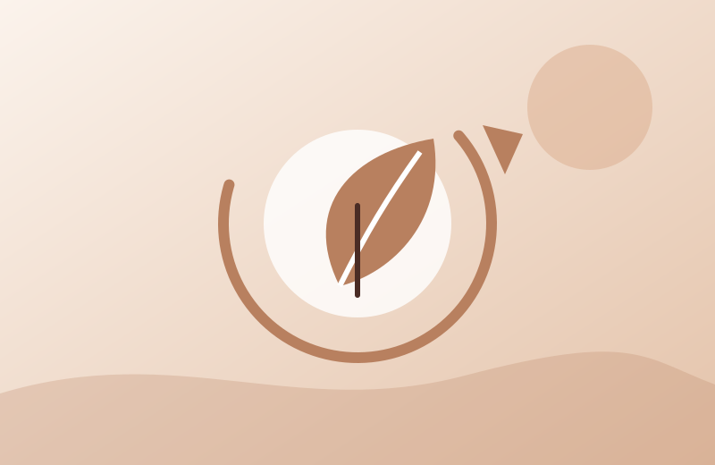

Services include assessment, psychoeducation, individualized treatment planning, exposure-based interventions, and relapse prevention. I work with a wide range of OCD presentations and co-occurring anxiety disorders.
Assessment
We start by getting a clear picture of your specific symptom patterns, values, and goals.
Psychoeducation
Learning how OCD works so intrusive thoughts lose their grip.

Individualized treatment planning
Structured, collaborative treatment tailored to your symptom patterns, values, and goals.
Exposure-based interventions
Exposure and Response Prevention (ERP), the gold-standard, evidence-based approach for OCD.

Relapse prevention
Staying on track and reconnecting with what matters most to you.
Start with a free consultation. Convenient, confidential, and tailored to you.
Get started